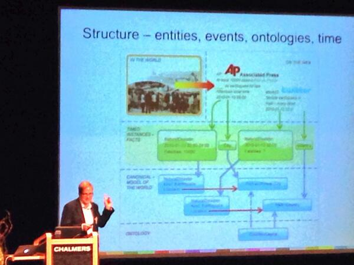
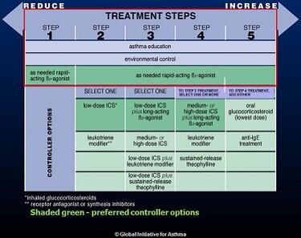
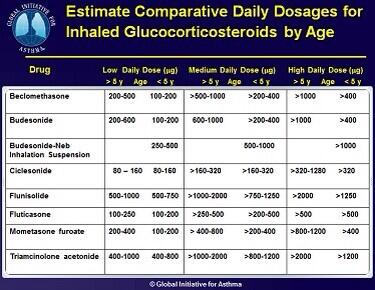
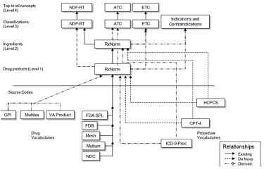
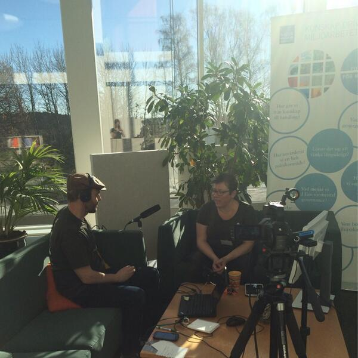
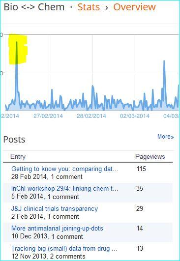

March 2014
@cdsouthan Well, many different % numbers. I've never tweeted any such, but find it interesting to follow the debate: dianthus.co.uk/the-zombie-sta…
One more to watch -> MT @Podesta44 Tomorrow's #bigdataprivacy workshop @BerkeleyISchool Livestream: ischool.berkeley.edu/newsandevents/…
MOOC "Reproducible Research" from @JohnsHopkins on @coursera part of the Data Science specialization coursera.org/course/repdata #repdata
I registered #amyloidosis, the diesase that killed my father 25 yrs ago symplur.com/healthcare-has… See how you can do it symplur.com/blog/healthcar…
Excellent initative, HT @tmlfox -> RT @ReginaHolliday: Healthcare Hashtags … the ones that don’t get published symplur.com/blog/healthcar…
Was just reminded of this nice quote: "Those who ignore Statistics are condemned to reinvent it." --Bradley Efron causeweb.org/cwis/SPT--Full…
MT @US_FDA: FDA wants your perspective on clinical trial demog. data go.usa.gov/KFhY <- Please consider OMRSE ontobee.org/browser/index.…
Tutorial and Workshop on Ontology and Imaging Informatics at the University at Buffalo NY on June 23-25, 2014 ncorwiki.buffalo.edu/index.php/Onto…
@Ejones82 3 (of 3) Entities are "more than words" a lesson learned in biomedical ontologies, see sciencecareers.sciencemag.org/career_magazin… /cc @flandqvist
@Ejones82 2 (of 3); SKOS is great, but mappings are hard and need justifications see kerfors.blogspot.se/2013/09/justif… /cc @flandqvist
@Ejones82 In short 1 (of 3): schema.org is great, see kerfors.blogspot.se/2012/04/descri… /cc @flandqvist
I'm reading a thread started by @lmatteis about #SemanticWeb vs Startup culture on Hacker News news.ycombinator.com/item?id=7491925
I was just reminded of this excellent article about biomedical ontologies: "More than words" sciencecareers.sciencemag.org/career_magazin…
Jag har postat ett svar på Google+ på @flandqvist's intressanta kommentar på min #LankadeData presentation plus.google.com/events/ca5udlb…
Listening to @danbri in @ontologysummit's "Tackling Variety in BigData" (from 51.15) ontolog.cim3.net/file/work/Onto… Slides ontolog.cim3.net/file/work/Onto…
Locking forward to listen to the recordings: "Tackling Variety in #BigData" fr @ontologysummit w @MDChisholm @danbri ow.ly/v3e1p
MT @motorcycle_guy: Pictorial representation of #FHIR resouces bit.ly/1jUNkTA <- Nice. What's the status of the RDF implementation?
“Ontology and Semantic Web techn. experience (RDF, OWL, SPARQL) is a big plus” #itjobs Sears Holdings ift.tt/1nYpNXU via @ericaxel
.@waldojaquith @JrWeave #fail Is this the way forward for #opendata: CSV on the web, see w3.org/TR/2014/WD-csv… and w3.org/TR/2014/WD-tab…
I've to prioritise my MOOCs: Machine Learning ml-class.org before Gamification coursera.org/course/gamific… #MOOCObesity
RT för #bigdatachalmers: @digisam_ra: En ny bloggpost om DCH-RP-projektet som ska ta fram en roadmap för bevarande digisam.se/index.php/hem/…
Apropå epigentik som Ib Groth-Clausen nämnde #bigdatachalmers - Aktuell blog post av Chalmers professorn @oHaggstrom haggstrom.blogspot.se/2014/02/om-sta…
Could the Data Documentation Initiative ddialliance.org #linkeddata be of interest for Quality of Government, QoG? #bigdatachalmers
Quality of Government (QoG) data standard presented at #bigdatachalmers qog.pol.gu.se/data/datadownl… looks like a perfect case for #linkeddata
Good comment from the audiance to the #bigdatachalmers panel re de-id of patients with rare diseases, see also kerfors.blogspot.se/2013/11/de-ide…
For #bigdatachalmers I would recommend the #bigdataprivacy feed to follow the discussion in the US now whitehouse.gov/issues/technol…
Interesting comments from Simone Fischer-Hübner on privavcy in #bigdatachalmers panel. Her publications: cs.kau.se/~simone/
. @AstraZeneca @dsmoley Open Data part of Open Innovation eg openinnovation.astrazeneca.com/what-we-offer/… published at least as 3-star data 5stardata.info
.@AstraZeneca launches #OpenInnovation web portal openinnovation.astrazeneca.com How about one for #OpenData opendata.astrazeneca.com ? cc: @dsmoley
Great to see ontologies in @truve's presentation on @RecordedFuture at #bigdatachalmers

Thx @emnland @BobergEmil great to learn a little about @ApacheSpark at #bigdatachalmers RT: A Delight for Developers blog.cloudera.com/blog/2014/03/a…
Interesting papers on visualisation of aggregates, samples etc. from #bigdatachalmers speaker @FisherDanyel research.microsoft.com/en-us/people/d…
Great Q #bigdatachalmers Patient access to their data. How about Swedish "Blue Button"? healthit.gov/bluebutton and pharmafile.com/news/181061/pf…
Similar visualisation as Göran Begrström showed at #bigdatachalmers on obesity epidemic the last 20 years in US americashealthrankings.org/all/obesity
A gene ontology inferred from molecular networks nexontology.org described by @jdutkowski at #bigdatachalmers
Re: side note in #bigdatachalmers by Terry Speed about p value article in Nature: http://www. nature.com/news/scientifi… pic.twitter.com/QZ6a0WtgrQ
"identifying and removing (i.e. adjusting for) unwanted variation" RUV -- Terry Speed royalsociety.org/people/terence… #bigdatachalmers
Great to see "Locating data" and "Getting access" on @NIH_BD2K list of Major challenges bd2k.nih.gov/about_bd2k.htm… #bigadatachalmers
Lunch walk listening to the last lecture in D&I Clinical Trial MOOC coursera.org/course/clintri… on RCTs and observational studies
“..the old paternal attitude towards ownership of data will eventually become redundant“ --@PharmaceuticBen pharmafile.com/news/183679/da… #ctdata
“HTTP URI [IRI] is not magic bullet either, it's services and infrastructure that matter” --@rdmpage
Time to follow up this old dialogue w/ @US_FDA when the awesome @openFDA now is happening. I'll post tonight on kerfors.blogspot.se
This is awesome: FDA on Github github.com/fda Pintarest pinterest.com/usfda/fda-info… Flickr flickr.com/photos/fdaphot… (Recalled products)
“I expect a vigorous debate in the comments on this post” [on #FHIR and #HL7 RIM] --@GrahameGrieve healthintersections.com.au/?p=1965
MT @ahier: Where’s Google going next? ted.com/talks/larry_pa… @TEDTalks <- Will watch on the bus to today's event @outdoornordic
MT @praxagora: Can data provide the trust we need in health care? strata.oreilly.com/?p=62026 #LongRead
#ReminderToSelf: IRIs [Internationalized Resource Identifierd] are a generalization of URIs. w3.org/TR/rdf11-conce…
@CaptainClinical Thx Glen for following - I liked the panel with you in Forbes late last year twitter.com/kerfors/status…
“It solves for the privacy laws, if not the privacy problems” --@wilbanks #TED2014 del-fi.org/post/801749671…
Presentationer från Länkade data i Sverige 2014 livingarchives.mah.se/2014/03/linked… #LankadeData <- Tack @mariegus @bBalsa
+1 for the Ethics theme Design&Interpr of Clinical Trial MOOC -> Is the Nuremberg Code Obsolete? by @margalitgurarie onhealthtech.blogspot.se/2014/03/is-nur…
Two excellent blog posts about "ETL: a hard ^#&@ing problem" from @allafarce daguar.github.io/2014/03/17/etl… and @medriscoll medriscoll.com/post/782447597…
Idea: Represent @ginasthma's Treatment Steps for #Asthma as structured data in RDF w/ URIs eg dbpedia.org/resource/Gluco…

Idea: Represent @ginasthma's Daily Dosages for #Asthma as structured data in RDF with URIs eg dbpedia.org/resource/Budes…

To follow the rest of the week. Hope for a lot of #LinkedData related -> MT @EUDataForum: #EDF2014 starts tomorrow 2014.data-forum.eu
Studying #OMOP Standard Vocabularies in Observational Data Analysis, Drug Domain omop.org/Domains

Nice post [In Swedish] on Innovationsbloggen by @pernillarydmark from the Hack for Sweden event #hack4swe naringsbloggen.se/innovation/gas…
Preparing for a busy afternoon, presenting in two webinars on #linkeddata 1) for a @vinnovase project metasolutions.se/2014/03/webbin…
Relevant for the D&I CT MOOC -> MT @PaulGlasziou: TIDiER checklist to better describe interventions [video abstract] bit.ly/Oqyryg
Watching the live stream @data_society "The Social, Cultural, & Ethical Dimensions of Big Data" datasociety.net #bigdataprivacy
Free webcast: Connecting the Dots with Dynamically Linked Data from Diverse Sources ow.ly/udO9v with Charlie Mead, W3C HCLS
I hope to see many tweets from people at #PhUSECSS FDA/PhUSE Computational Science Symposium phuse.eu/css 17-18 March
@EMA_News Excellent. Also consider publishing your reference info and other docs as structured data via open APIs as 5stardata.info
Week 5 in MOOC Design & Interpretation of Clinical Trials class.coursera.org/clintrials-001 Reporting Results. Will be interesting #ctdata #alltrials
@HackForSweden Önskar att fler myndigheter funderar på nästa steg mot 5-sttjärnig #LankadeData 5stardata.info cc; @karinahlin
Making breakfast and watching the "morning sofa" youtube.com/watch?v=HX0dHa… from @HackForSweden #hack4swe

.@ErikPupo @Farzad_MD @Cerner "metadata tagging" - Why not "RDF as a Universal Healthcare Exchange Language"? yosemitemanifesto.org
This is awesome: more than 400 people have now registered for Chalmers' #BigData seminar 25-26 March chalmers.se/en/areas-of-ad…
Very nice @DrTaha_FDA to see open.fda.gov/blog/introduci… #openFDA. @EMA_News When will we get #opendata #openEMA data.ema.europa.eu ?
@danbri none, but I forsee eg will publish CSR: ClinicalStudyDataRequest.com ClinicalTrialStudyTransparency.com gsk-clinicalstudyregister.com astrazenecaclinicaltrials.com
PhD Position in "#InternetofThings and #BigData" at Chalmers University of Technology, Gothenburg, Sweden chalmers.se/en/about-chalm…
.@danbri Any plans for a schema.org/MedicalDocument extension to schema.org/CreativeWork for eg ClinicalStudyReport for schema.org/MedicalTrial
Tisdag 18:e kl 14 ska jag prata på ett Webbinarium om länkade data i läkemedelsforskningen metasolutions.se/2014/03/webbin… #oppnadata #lankadedata
"researcher who doesn’t make available the data necessary to reproduce his conclusions isn’t getting his job done" datapub.cdlib.org/2014/03/13/lit…
Excellent overview -> MT @carlystrasser: New blog post: Lit Review of #PLOSfail & data sharing datapub.cdlib.org/2014/03/13/lit…
@casrai When "descriptions are about data" use eg VoID for datasets, ISO11179 for data elements, DC for "documents" slideshare.net/kerfors/metada…
@casrai Yeah, I know - what's data vs #metadata depends on your point of view hackingdistributed.com/2013/08/02/met…
Good luck @mariegus @bBalsa with the linked data meeting in Malmö today ldsv2014.eventbrite.com Sorry I can't make it. #lankadedata
@trialsonline @Lilly_COI +1 How about IC = machine-executable, contract/policy for transparency and accountability? kerfors.blogspot.se/2013/11/de-ide…
MT @electricbum: Editors DCAT rdforms.com/editors/dcat/ VoID rdforms.com/editors/void Blog metasolutions.se/2014/03/dcat-e… cc: @gray_alasdair @LTatakis
I've registered for @TopQuadrant's webcast: Connecting the Dots with Dynamically #LinkedData from Diverse Sources ow.ly/udO9v
The Web Is 25 — And The Semantic Web Has Been An Important Part Of It semanticweb.com/web-25-semanti… Very nice overview by @Jenz514 #web25 #webat25
Nice to see Semantic Web in title of a #ClinTech presentation together with CDISC Share, TransCelerate, BRIDG cbinet.com/conference/age…
Tomorrow, 12 March, the web turns 25 #webat25 <- Why I am so obsessed with this "Semantic Web thing" kerfors.blogspot.se/2014/02/why-i-…
25 things you might not know about the web theguardian.com/technology/201… No 14 "would be much more useful if web pages were machine-understandable"
Cool -> #SemanticWeb Jobs announced by Facebook ift.tt/1l2pTs8 and Google ift.tt/1cS34C5 the last couple of days
#BigDataPrivacy: an uneasy face-off for government to face oreil.ly/1lwL3BX MIT workshop kicked off a conversation, by @praxagora
I hope @openFDA will go #LinkedData using Linked AERS aers.data2semantics.org Linked SPL bio2rdf.org or dbmi-icode-01.dbmi.pitt.edu/linkedSPLs/
+1 RT @ManeeshJuneja: Companies that approach data privacy the right way can use it to differentiate themselves buff.ly/1fFZ7GM
MT @BigData_Journal: BigData Means Big Questions on How That Information Is Used bits.blogs.nytimes.com/2014/03/03/big… #BigDataPrivacy #InfoAccountability
More interesting presentations from Conference on Semantics in Healthcare and Life Sciences #cshals now published: iscb.org/cshals2014-pro…
Towards Semantic Interoperability of the CDISC Foundational Standards iscb.org/images/stories… FDA/PhUSE slides presented at #cshals #cdisc
You're welcome Chris :) MT @cdsouthan: Nice to see the "Kerstin RT spikes" in my cdsouthan.blogspot.se posts

@cdsouthan @stephensenn @pubchem Exactly ct.gov, i.e. pharmas, need to go "From strings to things" lists.w3.org/Archives/Publi…
@stephensenn So far no #cdisc stds for analysis results / metadata hence this joint @PHUSETwitta FDA @CDISC project phusewiki.org/wiki/index.php…
Oops! RT @WiredUK: NHS patient data made publicly available online: po.st/EEHkjm by @olivia_solon #caredata
#IBMWatson via API ibm.co/1pRQrzY | #Freebase (core of Google's #KnowledgeGraph) RDF in the Cloud via SPARQL sindicetech.com/freebase
On my #ToReadList -> RT @GilPress: Tom Davenport's Guide to #BigData onforb.es/OSTRox via @Forbes
Nice to hear @djweitzner talk about #InfoAccountability at the #bigdataprivacy MIT workshop web.mit.edu/bigdata-priv/w…
I just backed protocols.io - Life Sciences Protocol Repository on @Kickstarter kck.st/1dphqhm <- My first crowd funding
Why I am so obsessed with this "Semantic Web thing". Charlie Mead, co-chair @w3c HCLS, helped me with to express it kerfors.blogspot.se/2014/02/why-i-…
Confused abt NHS data CPRD cprd.com/intro.asp | HES hscic.gov.uk/hesdata | care.data nhs.uk/caredata Aggregated vs person-level
Today webcast -> MT @djweitzner: MIT Privacy Workshop to Explore "Big Data" Opportunities, Challenges | White House wh.gov/lPv51
Interesting to read @oHaggstrom @KarinBojs @EvidensJonas @lakemedel on p-value, "data-fishing", epigenetic [swe] haggstrom.blogspot.se/2014/02/om-sta…